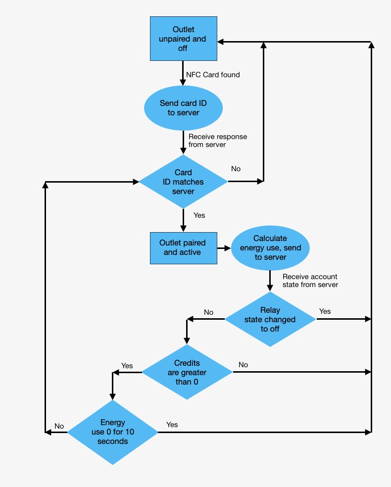
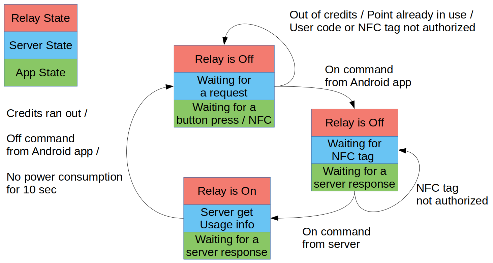
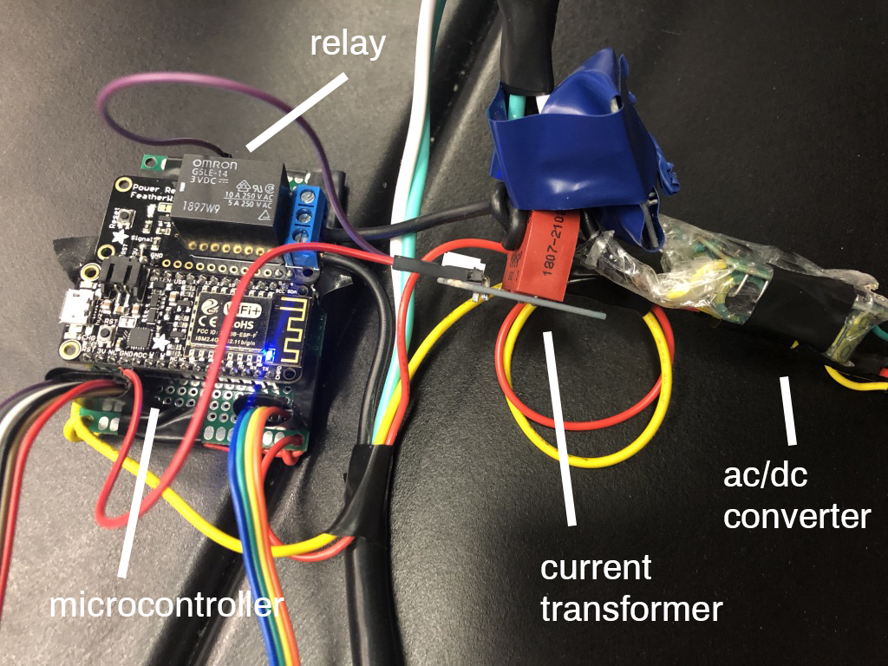
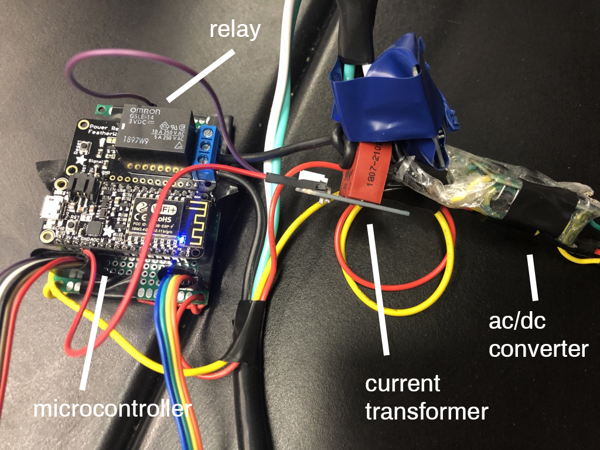

Noah Gallant
Noah is an undergraduate senior studying Computer Science in the School of Engineering at Columbia. Find him online here.
Columbia University
EECS E4764 Fall'18 Internet of Things
Intelligent and Connected Systems
Team 1 Project Report
The public outlet project is a smart outlet which enabels street-level storefronts to sell electricity to street cart vendors. Through a REST API, the "public" outlet connects to a vendor's smartphone through a server which can remotely control the state of the outlet. A vendor has allotted credits which give them access to a corresponding amount of Watt-hours of energy, which they can replenish.
In New York, publically accessible power is limited for street-vendors. Largely, vendors rely on gas generators for power for their carts which might serve food. These generators can be dangerous to operate and are growing more expensive to operate over time relative to the price of renewable energy. The motivation of the public outlet project is to allow street vendors to utilize the energy source of nearby businesses as a resource.
We leverage a REST-based architecture with three main technical components: the server, the smartphone and the relay point.
The operation of the device is simple. A customer using the service would be given a NFC card and an account. They then pair the card with their phone, and the server stores the card info as part of the account information. The card allows for use by multiple employees who might not have access to the account information. When ready to use the outlet, the user must trigger that they are ready to pair from the app. The outlet is constantly looking for an NFC card, and once it sees one it will send the card ID to the server. If the server recognizes that the card ID belongs to the account attempting to pair with the outlet, it will turn the outlet on and begin energy monitoring.

The cumulated amount of energy used is shown on the screen of the device and sent back to the server, which will then send the usage to the user’s phone. The pre-paid credits in the account will decrement with energy usage and will be constantly updated. Based on a moving average of the energy use and the number of credits left in the user’s account, we calculate an estimated time remaining and display that on the device. We also display the amount of energy left in the account before the outlet turns off. If the user buys more credits while the device is running it will update the usage and display the new remaining amount and estimated time on the screen.

Once the credits run out the outlet will turn off and disconnect from the account. The pairing process must then start over to turn the outlet back on. If there are no credits in the account when a user tries to activate the outlet, it will not allow activation.
There are 2 other ways that the device will disconnect from the user and require a repair. The user has the capability of turning off the relay remotely from the app. In addition the outlet will recognize if the device has been unplugged or turned off, and if it stops drawing power for 10 seconds the outlet will turn off and disconnect from the user.
The energy monitoring is done using a current transformer module, which steps down the current running through our AC line by 1000. For example, if we have 2A running through the line the transformer steps this down to 2mA. This is put through a 200 ohm resistor, and we take the voltage across this resistor and measure it using the ADC on the feather. This conversion is linear, with 0V measuring 0A and 1V measuring 5A. Because the current running through the line is AC, our measurement finds the maximum voltage, representing the amplitude of the signal, within a 100ms period and uses that for the calculation. This current measurement is non-rms, so after converting into an RMS current and multiplying by our AC voltage, we can find the instantaneous power of our line. Multiplying this power measurement by the time it was measured in gives us our energy use.
Our technical components are shown in our block diagram above.
 

Our prototype is shown with labels of parts as above. The prototype has a single public outlet point and can handle multiple users.
We were able to reliably satisfy our initial goals of having a user control the relay point from their phone according to the diagrams shown in Architecture with each of shut-off conditions functioning as expected (10 second turn-off, remote shut-off, run out of credits).
The power readings for a 45 Watt MacBook charger would ideally give a reading of 0.0125 Wh/s and we got an average reading of 0.0118 Wh/s which would imply an accuracy of 94% for the power consumption.
Noah is an undergraduate senior studying Computer Science in the School of Engineering at Columbia. Find him online here.
Asher is an undergraduate senior studying Electrical Engineering in the School of Engineering at Columbia. Find him online here
Guy is a Master's student in Electrical Engineering at Columbia University. Find him online here.
Noah Gallant: nag2145@columbia.edu
Guy Farkash: gf2373@columbia.edu
Asher Goldfinger: asg2189@columbia.edu
Columbia University Department of Electrical Engineering
Instructor: Professsor Xiaofan (Fred) Jiang